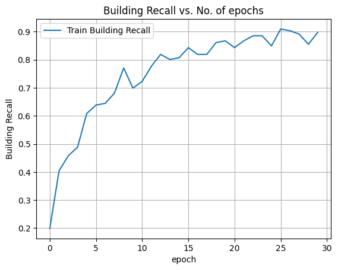

# Import The Libraries
import tensorflow as tf
from tensorflow.keras.layers import Input, Lambda, Dense, Flatten
from tensorflow.keras.models import Model
from tensorflow.keras.applications.xception import Xception, preprocess_input
from tensorflow.keras.preprocessing import image
from tensorflow.keras.preprocessing.image import ImageDataGenerator, load_img
from tensorflow.keras.models import Sequential
from tensorflow.keras.callbacks import EarlyStopping, ModelCheckpoint
import numpy as np
import pandas as pd
from glob import glob
import matplotlib.pyplot as plt
import seaborn as sns
import os
import cv2
!unzip -q Training_age.zip -d /content/
!unzip -q Test_age.zip -d /content/
train_dir = "/content/Training_age"
test_dir = "/content/Test_age"
labels = os.listdir(train_dir)
print('Classes:', labels)
replace /content/Training_age/edad_PR10/103812.jpg? [y]es, [n]o, [A]ll, [N]one, [r]ename: replace /content/Test_age/edad_PR10/105002.jpg? [y]es, [n]o, [A]ll, [N]one, [r]ename: N
Classes: ['edad_PT10', 'edad_PR98', 'edad_PR10', 'edad_PR84']
IMAGE_SIZE = [300,300]
xception = Xception(
input_shape = IMAGE_SIZE + [3], # Making the image into 3 Channel, so concating 3.
weights = 'imagenet', # Default weights.
include_top = False #
)
Downloading data from https://storage.googleapis.com/tensorflow/keras-applications/xception/xception_weights_tf_dim_ordering_tf_kernels_notop.h5
83683744/83683744 [==============================] - 0s 0us/step
# Image paths
train_data = os.listdir("/content/Training_age/edad_PR84")
image_paths = train_data[0:30]
dataset = tf.data.Dataset.from_tensor_slices(image_paths)
def load_and_preprocess_image(image_path):
image = tf.io.read_file("/content/Training_age/edad_PR84/"+image_path)
image = tf.image.decode_image(image, channels=3)
return image.numpy()
images = [load_and_preprocess_image(image_path) for image_path in image_paths]
rows = 5
cols = 6
fig = plt.figure(figsize=(6, 8))
for i in range(len(images)):
ax = fig.add_subplot(rows, cols, i + 1)
ax.imshow(images[i])
ax.axis('off')
plt.tight_layout()
plt.show()
# Image paths
train_data = os.listdir("/content/Training_age/edad_PR10")
image_paths = train_data[0:20]
dataset = tf.data.Dataset.from_tensor_slices(image_paths)
def load_and_preprocess_image(image_path):
image = tf.io.read_file("/content/Training_age/edad_PR10/"+image_path)
image = tf.image.decode_image(image, channels=3)
return image.numpy()
images = [load_and_preprocess_image(image_path) for image_path in image_paths]
rows = 4
cols = 5
fig = plt.figure(figsize=(6, 8))
for i in range(len(images)):
ax = fig.add_subplot(rows, cols, i + 1)
ax.imshow(images[i])
ax.axis('off')
plt.tight_layout()
plt.show()
for layer in xception.layers:
layer.trainable = False
# This will let us use the default weights used by the imagenet.
# Set the flatten layer.
x = Flatten() (xception.output)
prediction = Dense(len(labels), activation = 'softmax')(x)
# Create a model Object
model = Model(inputs = xception.input, outputs = prediction)
model.compile (
loss = 'categorical_crossentropy',
optimizer = 'adam',
metrics = ['categorical_accuracy', tf.keras.metrics.Recall(class_id = 1)]
)
# Use the Image Data Generator
# from tensorflow.keras.proprocessing.image import ImageDataGenerator
train_datagen = ImageDataGenerator(
rescale = 1./255,
rotation_range=10,
horizontal_flip = True
)
training_set = train_datagen.flow_from_directory(
train_dir,
target_size = IMAGE_SIZE,
batch_size = 1,
class_mode = 'categorical' # As we have more than 2 so using categorical.. for 2 we might have used binary.
)
test_set = train_datagen.flow_from_directory(
test_dir,
target_size = IMAGE_SIZE,
batch_size = 1,
shuffle=False,
class_mode = 'categorical'
)
Found 1528 images belonging to 4 classes.
Found 388 images belonging to 4 classes.
from tensorflow.keras.callbacks import EarlyStopping
early_stopping = EarlyStopping(monitor='loss', patience=5)
history = model.fit(
training_set,
epochs = 30,
steps_per_epoch = len(training_set),
callbacks=[early_stopping]
)
Epoch 1/30
1528/1528 [==============================] - 66s 36ms/step - loss: 25.3702 - categorical_accuracy: 0.4954 - recall: 0.1988
Epoch 2/30
1528/1528 [==============================] - 48s 31ms/step - loss: 21.0226 - categorical_accuracy: 0.6080 - recall: 0.4036
Epoch 3/30
1528/1528 [==============================] - 48s 32ms/step - loss: 18.9941 - categorical_accuracy: 0.6545 - recall: 0.4578
Epoch 4/30
1528/1528 [==============================] - 48s 32ms/step - loss: 16.7268 - categorical_accuracy: 0.6963 - recall: 0.4880
Epoch 5/30
1528/1528 [==============================] - 50s 33ms/step - loss: 15.4778 - categorical_accuracy: 0.7369 - recall: 0.6084
Epoch 6/30
1528/1528 [==============================] - 48s 32ms/step - loss: 12.1022 - categorical_accuracy: 0.7605 - recall: 0.6386
Epoch 7/30
1528/1528 [==============================] - 48s 31ms/step - loss: 12.6920 - categorical_accuracy: 0.7880 - recall: 0.6446
Epoch 8/30
1528/1528 [==============================] - 48s 32ms/step - loss: 10.9612 - categorical_accuracy: 0.8043 - recall: 0.6807
Epoch 9/30
1528/1528 [==============================] - 49s 32ms/step - loss: 8.9230 - categorical_accuracy: 0.8331 - recall: 0.7711
Epoch 10/30
1528/1528 [==============================] - 48s 32ms/step - loss: 10.0319 - categorical_accuracy: 0.8082 - recall: 0.6988
Epoch 11/30
1528/1528 [==============================] - 48s 31ms/step - loss: 8.4444 - categorical_accuracy: 0.8338 - recall: 0.7229
Epoch 12/30
1528/1528 [==============================] - 50s 33ms/step - loss: 8.1527 - categorical_accuracy: 0.8436 - recall: 0.7771
Epoch 13/30
1528/1528 [==============================] - 48s 31ms/step - loss: 7.1113 - categorical_accuracy: 0.8619 - recall: 0.8193
Epoch 14/30
1528/1528 [==============================] - 47s 31ms/step - loss: 8.5185 - categorical_accuracy: 0.8580 - recall: 0.8012
Epoch 15/30
1528/1528 [==============================] - 47s 31ms/step - loss: 7.9999 - categorical_accuracy: 0.8671 - recall: 0.8072
Epoch 16/30
1528/1528 [==============================] - 49s 32ms/step - loss: 5.8093 - categorical_accuracy: 0.8966 - recall: 0.8434
Epoch 17/30
1528/1528 [==============================] - 47s 31ms/step - loss: 7.1702 - categorical_accuracy: 0.8711 - recall: 0.8193
Epoch 18/30
1528/1528 [==============================] - 47s 30ms/step - loss: 7.4136 - categorical_accuracy: 0.8868 - recall: 0.8193
Epoch 19/30
1528/1528 [==============================] - 48s 31ms/step - loss: 6.1337 - categorical_accuracy: 0.8979 - recall: 0.8614
Epoch 20/30
1528/1528 [==============================] - 48s 31ms/step - loss: 5.1883 - categorical_accuracy: 0.9077 - recall: 0.8675
Epoch 21/30
1528/1528 [==============================] - 48s 32ms/step - loss: 6.2422 - categorical_accuracy: 0.8927 - recall: 0.8434
Epoch 22/30
1528/1528 [==============================] - 48s 31ms/step - loss: 5.6322 - categorical_accuracy: 0.9084 - recall: 0.8675
Epoch 23/30
1528/1528 [==============================] - 48s 32ms/step - loss: 5.1301 - categorical_accuracy: 0.9162 - recall: 0.8855
Epoch 24/30
1528/1528 [==============================] - 48s 31ms/step - loss: 4.6451 - categorical_accuracy: 0.9169 - recall: 0.8855
Epoch 25/30
1528/1528 [==============================] - 48s 31ms/step - loss: 5.5480 - categorical_accuracy: 0.9084 - recall: 0.8494
Epoch 26/30
1528/1528 [==============================] - 49s 32ms/step - loss: 5.5060 - categorical_accuracy: 0.9097 - recall: 0.9096
Epoch 27/30
1528/1528 [==============================] - 48s 32ms/step - loss: 4.1182 - categorical_accuracy: 0.9319 - recall: 0.9036
Epoch 28/30
1528/1528 [==============================] - 49s 32ms/step - loss: 3.9203 - categorical_accuracy: 0.9365 - recall: 0.8916
Epoch 29/30
1528/1528 [==============================] - 48s 31ms/step - loss: 4.0587 - categorical_accuracy: 0.9267 - recall: 0.8554
Epoch 30/30
1528/1528 [==============================] - 49s 32ms/step - loss: 4.4946 - categorical_accuracy: 0.9221 - recall: 0.8976
# Plot the Loss
plt.plot(history.history['loss'],'-x', label = 'train_loss')
#plt.plot(history.history['val_loss'],'-x', label ='val loss')
plt.xlabel('epoch')
plt.ylabel('Loss')
plt.title('Loss vs. No. of epochs')
plt.grid(True)
plt.legend()
plt.show()
# Plot the Accuracy
plt.plot(history.history['categorical_accuracy'], label = 'train accuracy')
#plt.plot(history.history['val_binary_accuracy'], label ='val categorical_accuracy')
plt.xlabel('epoch')
plt.ylabel('Categorical Accuracy')
plt.title('Accuracy vs. No. of epochs')
plt.grid(True)
plt.legend()
plt.show()
# Plot the Accuracy
plt.plot(history.history['recall'], label = 'Train Building Recall')
#plt.plot(history.history['val_recall'], label ='Vrain Building Recall')
plt.xlabel('epoch')
plt.ylabel('Building Recall')
plt.title('Building Recall vs. No. of epochs')
plt.grid(True)
plt.legend()
plt.show()

prediction = model.predict(test_set)
preds = prediction
prediction = np.argmax(prediction, axis = 1)
388/388 [==============================] - 13s 30ms/step
def show_confusion_matrix(cm, labels):
plt.figure(figsize=(10, 8))
sns.heatmap(cm, xticklabels=labels, yticklabels=labels,annot=True, fmt='g',
cmap=sns.color_palette("Greens", as_cmap=True))
plt.xlabel('Prediction')
plt.ylabel('True Label')
plt.show()
confusion_mtx = tf.math.confusion_matrix(
test_set.labels,
prediction,
num_classes=len(labels))
show_confusion_matrix(confusion_mtx, labels)
cm_norm = np.zeros((confusion_mtx.shape[0],confusion_mtx.shape[1]))
for i in range(confusion_mtx.shape[0]):
total_label = sum(confusion_mtx[i,:])
for j in range(confusion_mtx.shape[1]):
if total_label > 0:
cm_norm[i,j] = np.round(confusion_mtx[i,j]/total_label,2)
show_confusion_matrix(cm_norm, labels)
img, label = test_set.next()
x = image.img_to_array(img[0])
x = np.expand_dims(x, axis = 0)
pred_class = model.predict(x)
a = int(np.argmax(pred_class, axis = 1))
story = labels[a]
print("Probability:",pred_class)
print("Class:",story)
plt.figure()
plt.imshow(img[0])
plt.show()
1/1 [==============================] - 0s 23ms/step
Probability: [[0. 0. 1. 0.]]
Class: edad_PR10
Clase real PR10
path = "/content/Test_age/edad_PR84/156155.jpg"
img = image.load_img(path, target_size = [300,300])
plt.imshow(img)
x = image.img_to_array(img)
x = np.expand_dims(x, axis = 0)
img_data = preprocess_input(x)
pred_class = model.predict(img_data)
a = int(np.argmax(pred_class, axis = 1))
story = labels[a]
print("Probability:",pred_class)
print("Class:",story)
1/1 [==============================] - 0s 24ms/step
Probability: [[0. 0. 1. 0.]]
Class: edad_PR10
Clase real PR84